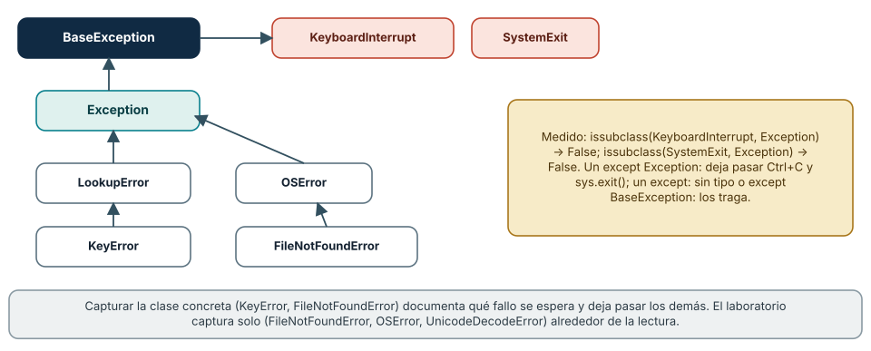
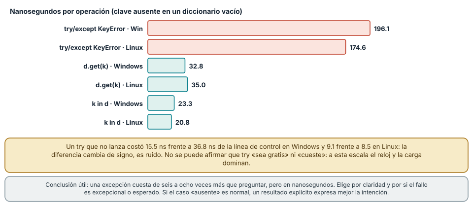
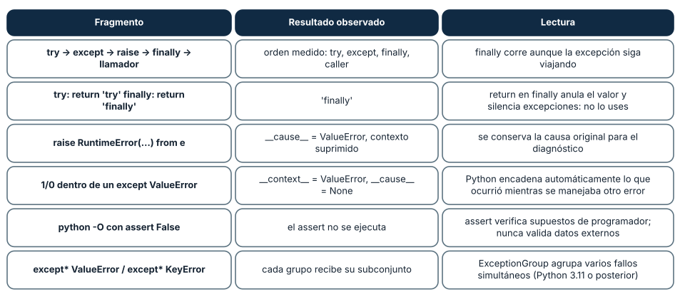

← SE-064 — Funciones, parámetros, retorno y alcance · ↑ Parte 05 · 📚 Índice completo · 🌐 Portal · SE-066 — Colecciones y transformación de datos →
Punto profesional y fundamento pedagógico
Punto profesional. La clase existe para distinguir error esperado, excepción, resultado explícito y fallo irrecuperable.
Por qué aparece aquí. Se sitúa después de Funciones, parámetros, retorno y alcance y antes de Colecciones y transformación de datos: convierte el conocimiento anterior en una decisión observable que la clase siguiente podrá reutilizar. La continuidad se comprueba en el artefacto, no por compartir vocabulario.
Error conceptual que debe corregir. Capturar toda excepción y continuar sin preservar causa.
Secuencia de aprendizaje. Antes de leer la solución, el estudiante predice el resultado del caso normal y del error conceptual anterior. Luego explica un caso resuelto paso a paso, construye un contraejemplo que cambie la decisión y, sin consultar el texto, reconstruye el mecanismo y lo aplica a una entrada nueva. La secuencia usa predicción, explicación propia, contraste y recuperación. ICAP distingue participación de construcción de conocimiento; How People Learn II exige conectar conocimiento previo, contexto y transferencia; la práctica de recuperación respalda producir de nuevo la explicación tras una demora; y Education for Life and Work exige devolución que explique la causa del error.
Evidencia de aprendizaje. Failure-taxonomy.md con propagación, contexto, recuperación y regresión. Debe contener predicción previa, observación, explicación causal, contraejemplo, criterio de aceptación y una nota de qué dato haría cambiar la conclusión.
Límite de la conclusión. Ninguna estrategia única sirve para todas las fronteras.
Trazabilidad fuente → afirmación
| Fuente primaria u oficial | Afirmación que respalda | Lo que no prueba |
|---|---|---|
| Python Tutorial — Errors and Exceptions | define la semántica y los límites de la API de Python utilizada en el experimento | No demuestra por sí sola que el artefacto del estudiante sea correcto. |
| Python Language Reference | define la semántica y los límites de la API de Python utilizada en el experimento | No demuestra por sí sola que el artefacto del estudiante sea correcto. |
| The Rust Programming Language | documenta ownership, tipos de error, traits y concurrencia usados como contraste semántico | No demuestra por sí sola que el artefacto del estudiante sea correcto. |
Antes de empezar
Esta clase construye la CLI diagnóstica, implementación incremental de la especificación del modelo de decisión diagnóstica. Recupera SE-064 y convierte una regla ya modelada en comportamiento ejecutable o comprobable. Trabaja en cambios pequeños: predicción, código, ejecución, evidencia y explicación. Ejecutar sin poder explicar el resultado no completa la práctica.
Prerrequisitos
- Python 3.11 o posterior disponible como
pythonopython3; registra la versión real. - Terminal, editor de texto y Git; no se requieren paquetes externos.
- Comprender el contrato del modelo de decisión diagnóstica: entradas, resultados, errores e invariantes.
Problema auténtico
La CLI diagnóstica atrapa Exception y continúa con datos incompletos. El usuario recibe éxito aunque el archivo no se leyó. Se deben distinguir errores de entrada, fallos esperados de I/O, defectos de programación y resultados de dominio.
Objetivos observables
Al terminar podrás explicar el mecanismo del lenguaje, predecir una ejecución, implementar un caso normal y sus fronteras, diagnosticar un fallo controlado, proteger el comportamiento con evidencia y separar lo transferible de lo específico de Python.
Mapa conceptual
Ver la notación fuente del diagrama
flowchart LR
S[Especificación el modelo de decisión diagnóstica] --> V[Valores y contratos]
V --> C[Control y transformación]
C --> E[Efectos en la frontera]
E --> O[Salida observable]
O --> T[Prueba y diagnóstico]
T -->|defecto o caso nuevo| SEl código no reemplaza la especificación: la materializa bajo reglas concretas del lenguaje y del entorno. La pregunta de esta clase es: ¿Quién puede recuperarse del fallo y qué información necesita para decidir?
Temas y por qué importan
| Lente | Pregunta | Evidencia |
|---|---|---|
| valor | ¿qué representa y qué tipo tiene? | ejemplo inspeccionable |
| control | ¿qué camino o repetición ocurre? | traza de estados |
| contrato | ¿qué acepta, retorna y rechaza? | casos frontera |
| efecto | ¿qué cambia fuera del cálculo? | archivo o stream controlado |
| mantenimiento | ¿cómo se detecta una regresión? | prueba y diff enfocado |
Conceptos y decisiones
1. Sintaxis, excepción y resultado
Un error de sintaxis impide construir el programa. Una excepción interrumpe el flujo hasta un manejador compatible. Un resultado de dominio como DNS_TIMEOUT puede ser dato normal del diagnóstico y no una excepción. Mezclarlos produce APIs impredecibles.
2. Captura específica
Se captura la excepción que puede tratarse en esa frontera: FileNotFoundError, JSONDecodeError, ValueError. except Exception puede registrar y relanzar en un borde superior, pero no debe ocultar defectos. El bloque try se mantiene pequeño para no capturar otra operación accidental.
3. raise, chaining y contexto
raise conserva traceback; raise ... from error añade contexto causal sin perder origen. El mensaje explica acción y recurso seguro, pero no secretos. Traducir una excepción de biblioteca a una de dominio estabiliza la interfaz.
4. finally y recursos
finally se ejecuta haya o no excepción, útil para liberar recursos. Los context managers con with expresan adquisición y cierre de archivos de forma más segura. No se retorna desde finally, porque puede suprimir errores y resultados.
5. Resultado explícito
Cuando ausencia o rechazo es parte esperada del dominio, un resultado etiquetado evita usar excepciones como control ordinario. Python puede usar una estructura {'ok': False, 'error': ...} o tipos propios; Rust usa Result<T,E>. El contrato debe impedir estados ambiguos con valor y error simultáneos.
La jerarquía de excepciones: qué captura cada except
Una excepción es un objeto, y las clases de excepción forman un árbol. KeyError desciende de LookupError, que desciende de Exception, que desciende de BaseException; FileNotFoundError desciende de OSError. Esa estructura decide qué captura cada except: except LookupError captura KeyError e IndexError, y except OSError captura FileNotFoundError, PermissionError y más. Capturar la clase concreta documenta qué fallo se espera y deja pasar los demás, que son defectos.
Hay una frontera especial. KeyboardInterrupt y SystemExit descienden de BaseException directamente, no de Exception: se midió que issubclass(KeyboardInterrupt, Exception) y issubclass(SystemExit, Exception) son False. Por eso except Exception: deja pasar Ctrl+C y sys.exit(), que es lo que se quiere, y un except: sin tipo, o except BaseException:, los traga: el programa deja de poder interrumpirse. El laboratorio captura solo (FileNotFoundError, OSError, UnicodeDecodeError) alrededor de la lectura de archivos, y devuelve para cada uno un código de salida 5; cualquier otro error (un defecto) sube hasta producir un traceback, que es lo correcto.
Python 3.11 añadió grupos de excepciones: ExceptionGroup("g", [ValueError("a"), KeyError("b")]) se separa con except* ValueError y except* KeyError, y cada rama recibió solo su subconjunto. Sirve para tareas concurrentes que fallan a la vez; con una sola excepción por vez, except clásico basta.

Cómo leer la figura. Una flecha va de la clase hija a su base. Lo que cuelga de Exception lo captura except Exception; las dos clases en rojo no, y por eso Ctrl+C sobrevive a un except Exception. Dónde deja de valer: la jerarquía es la de la biblioteca estándar de Python 3.12; bibliotecas propias definen las suyas. Java separa checked de unchecked, Go y Rust no usan excepciones para errores esperados: la idea de «declarar qué se espera» se conserva, el mecanismo no.
Cuánto cuesta una excepción y cuándo preguntar antes
Lanzar y capturar una excepción costó 192.1 ns en Windows (183.7 en Linux). Leer una clave ausente con try/except KeyError costó 196.1 ns (174.6), frente a 32.8 ns (35.0) con d.get(k) y 23.3 ns (20.8) con k in d. Una excepción cuesta de seis a ocho veces más que preguntar antes, pero todo en nanosegundos: no se justifica elegir por velocidad salvo en un bucle crítico medido.
Se intentó también medir el costo de un try que no lanza y el resultado es instructivo: 15.5 ns frente a 36.8 ns de la línea de control en Windows (y 9.1 frente a 8.5 en Linux). La diferencia cambia de signo entre plataformas, así que es ruido de medición, y no se puede afirmar ni que try «sea gratis» ni que «cueste». Un medidor honesto declara cuándo el efecto está por debajo de su resolución.
La decisión real es otra: ¿el caso es excepcional o esperado? Si la ausencia de una clave es lo normal, un resultado explícito (d.get, un Result, una comparación con None) expresa la intención y evita que el flujo normal pase por el mecanismo de errores. Si el caso rompe una precondición (un archivo obligatorio que no existe), la excepción comunica «esto no debería pasar» y arrastra la traza. Los errores esperados del dominio del laboratorio (unauthorized_test, budget_exceeded) no son excepciones: viajan como Result porque son salidas válidas del cálculo.

Cómo leer la figura. Barras rojas: la ruta con excepción. Barras verdes: preguntar antes. Las dos notas inferiores dicen qué conclusión sí y no se puede sacar de los números. Dónde deja de valer: el costo depende de la versión de CPython (3.11 abarató los try sin excepción) y de la profundidad de la pila. Ningún número aquí es una constante: compara órdenes de magnitud.
Orden de ejecución, encadenamiento y lo que anula un finally
El orden de un try/except/else/finally con una excepción que se relanza se registró en una lista: try, except, finally, y después el código del llamador. El bloque finally corre siempre, también cuando la excepción sigue su camino, y es el lugar para liberar recursos (aunque el administrador with lo hace de forma más segura). Pero un return dentro de finally anula el valor que se iba a devolver y descarta cualquier excepción pendiente: try: return 'try' finally: return 'finally' devolvió 'finally'. Es una de las pocas construcciones que silencian un fallo sin dejar rastro.
Para el diagnóstico importa conservar la causa. Con raise RuntimeError('config inválida') from e el nuevo error guarda __cause__ = ValueError y marca el contexto como suprimido; sin from, una excepción lanzada mientras se maneja otra guarda __context__ (se midió 1/0 dentro de un except ValueError con __context__ igual a ValueError y __cause__ en None). El traceback muestra ambas, y por eso «traducir» un error de bajo nivel a uno de dominio no debe perder el original. También se midió que un traceback de tres marcos conserva la ruta completa: función, línea y llamada.
Una última precisión: assert no es validación. Con python -O el assert False, 'x' no se ejecutó (la salida fue assert ignorado). Un assert expresa una suposición del programador sobre su propio código; los datos externos se validan con comprobaciones que no desaparecen y devuelven un error del dominio.

Cómo leer la figura. Cada fila es un fragmento y su resultado. Las filas de finally y de assert son las que más sorprenden: ambas pueden ocultar un fallo. Dónde deja de valer: el encadenamiento (__cause__, __context__) y except* son de Python 3.11 o posterior; en versiones anteriores except* no existe. En otros lenguajes la semántica de finally con return difiere.
Definiciones de trabajo
- excepción: objeto que señala interrupción anormal.
- manejador: bloque que trata una excepción compatible.
- propagación: búsqueda de un manejador en la pila.
- chaining: vínculo causal entre excepciones.
- resultado explícito: valor que representa éxito o fallo esperado.
Estas definiciones describen el uso concreto en la CLI diagnóstica. Cuando Python permita varias conductas, el contrato del programa elige una y la hace visible con validación y pruebas.
Ejemplo mínimo
def load_text(path):
try:
return {"ok": True, "value": path.read_text(encoding="utf-8")}
except FileNotFoundError as error:
return {"ok": False, "error": "INPUT_NOT_FOUND", "detail": str(error)}
except OSError as error:
raise RuntimeError("cannot read diagnostic input") from errorClasifica: argumento inválido, archivo ausente, JSON malformado, permiso denegado y división por cero interna. Decide resultado explícito, excepción traducida o defecto que debe propagarse.
Ejecuta el fragmento en un archivo, no solo en una conversación interactiva. Conserva comando, versión, salida y explicación de cada línea relevante.
Ejemplo profesional
La CLI diagnóstica devuelve código 2 para uso inválido, 3 para archivo no accesible y 1 para diagnóstico con fallo, reservando 0 para ejecución válida. stderr explica el error; stdout conserva salida parseable. Los errores internos mantienen traceback en modo debug.
El criterio profesional es que el comportamiento pueda ser consumido, diagnosticado y cambiado sin depender de conocimiento oral ni de estado oculto.
Práctica guiada
- enumera fallos por frontera.
- define quién puede recuperarse.
- reduce un bloque
try. - añade exception chaining.
- prueba que éxito no se emite tras fallo.
- ejecuta
python -m unittest -vcuando existan pruebas y registra el resultado exacto.
Ejercicios
- Clasificación: para
KeyError,ValueError,FileNotFoundError,ZeroDivisionErroryKeyboardInterrupt, indica cuál capturaexcept OSErrory cuálexcept Exceptiony comprueba conissubclass. - Orden: predice el orden de las trazas de un
tryconexceptque relanza y unfinally, y compruébalo con una lista. - Traducción: convierte un
ValueErrordeint()en un error de dominioinvalid_budgetconservando la causa y escribe la prueba que verifica__cause__. - Resultado explícito: reescribe una función que lanza
KeyErrorpara devolver unResulty compara el código del llamador antes y después.
Reto verificable
Entrega un cambio que incluya comportamiento, caso normal, caso límite, fallo controlado y explicación. Otra persona debe poder ejecutar los comandos desde un checkout limpio y relacionar cada salida con una regla del modelo de decisión diagnóstica.
Demostración guiada
- Escribe la entrada y la salida esperada antes del código.
- Ejecuta el caso mínimo y observa valores intermedios sin dejar prints permanentes en el núcleo.
- Añade el caso frontera que obligue a decidir, no solo a teclear.
- Introduce el fallo descrito abajo y confirma que la evidencia lo detecta.
- Corrige, ejecuta toda la suite y revisa el diff por efectos no deseados.
Preguntas frecuentes
¿try/except o if?
Usa if/get cuando el caso es normal y frecuente; usa excepciones cuando el caso viola una precondición. La diferencia de costo (unos 150 ns) rara vez decide.
¿Cuándo es válido except Exception?
En el borde de un proceso para registrar el fallo y salir con un código de error, nunca para continuar como si nada. Nunca except: sin tipo.
¿Por qué Result en lugar de excepciones?
Porque los rechazos del dominio son resultados esperados del cálculo, y un valor obliga a quien llama a tratarlos. Una excepción puede olvidarse; un Result no se desempaqueta sin mirar el error.
¿Cómo no perder la causa original?
Con raise NuevoError(...) from e. Verifica en el traceback que aparecen ambas excepciones.
Fallo controlado y diagnóstico
Reproduce los dos fallos del dominio con el motor del laboratorio. Una observación de una prueba inexistente devuelve unknown_test; una de production-capture, unauthorized_test; resolve con resultado unknown, contradictory_observation; y un gasto que excede el presupuesto, budget_exceeded. Ninguno es una excepción: todos son Result.fail(...). Después escribe una función que lea el archivo con except Exception: pass y observa que un error de permisos y un error de sintaxis desaparecen por igual. Sustituye por la captura de OSError y comprueba que el resto sube con su traceback. Registra qué fallos tienen un nombre en el dominio y cuáles son defectos.
Errores comunes y cómo corregirlos
| Síntoma | Causa | Corrección |
|---|---|---|
| el programa no responde a Ctrl+C | except: o except BaseException: captura KeyboardInterrupt | capturar clases concretas; Exception solo en el borde |
| un error desaparece sin rastro | except …: pass o return dentro de finally | manejar solo lo recuperable y registrar o relanzar |
| el mensaje final no menciona el fallo original | se tradujo la excepción sin from | raise … from e para conservar la causa |
| una validación «deja de funcionar» en producción | se usó assert para datos externos y se ejecutó con -O | validar con comprobaciones normales y errores del dominio |
una función devuelve None en unos fallos y lanza en otros | mezcla de estilos de error sin contrato | elegir y documentar un estilo por frontera |
Entorno y archivos clave
work/SE-065/
├── diagnostic_cli/
│ ├── __init__.py
│ ├── domain.py
│ ├── cli.py
│ └── __main__.py
├── tests/
│ └── test_diagnostic_cli.py
└── README.mdNo instales dependencias para resolver lo que cubre la biblioteca estándar. README.md conserva versión, comandos, entradas, salida, limpieza y límites. Los fragmentos son pedagógicos; intégralos solo después de entender su contrato.
Laboratorio integrado de la Parte 05
Clasifica los fallos reproducibles de labs/part-05-diagnostic-cli como uso, entrada, dominio, I/O o defecto interno. Contrasta Result.fail con las excepciones capturadas en cli.py y no añadas un except Exception: una invariante rota debe seguir siendo visible como defecto. Ejecuta entrada inválida, observación contradictoria y archivo ausente; conserva stderr, código de salida y decisión de recuperación en una matriz.
Seguridad, ética y accesibilidad
- usa fixtures sintéticos y no incluyas tokens, rutas personales ni incidentes reales;
- limita tamaño, profundidad y tiempo de entradas no confiables;
- separa stdout parseable de stderr y redacta datos sensibles;
- ofrece mensajes accionables y no dependas solo de color;
- preserva autorización como regla del núcleo, no como checkbox de UI;
- no uses
eval,execni construcción de shell con entrada externa.
Puente hacia el trabajo con agentes
Los agentes viven de errores: una herramienta falla, el agente lee el mensaje y decide qué hacer. La calidad de ese mensaje es calidad de diseño. Un error que dice error o un traceback de 200 líneas son igual de inútiles para un modelo; un código estable (budget_exceeded) con un detalle corto permite que el agente reintente con otro argumento o se detenga. Los controles que se derivan: los errores esperados de una herramienta se devuelven como valores con un código estable y un detalle acotado, los defectos no se ocultan (se registran con traza fuera del contexto del modelo) y ninguna captura amplia transforma un fallo de seguridad en un reintento silencioso. El contrato de salidas del laboratorio (SE-072) es un ejemplo mínimo de este diseño.
Transferencia
Reimplementa el contrato, no la sintaxis. Identifica cómo el segundo lenguaje representa ausencia, error, mutabilidad y módulos. Conserva fixtures y resultados públicos para detectar una diferencia semántica.
Evaluación y evidencia
| Criterio | Evidencia para aprobar |
|---|---|
| comprensión | predicción y explicación de ejecución |
| comportamiento | normal, límite e inválido según contrato |
| diseño | cálculo separado de efectos y dependencias visibles |
| diagnóstico | fallo mínimo, causa y regresión |
| reproducibilidad | versión, comandos y salidas desde checkout limpio |
Fuentes
- Python Tutorial — Errors and Exceptions — define la semántica y los límites de la API de Python utilizada en el experimento.
- Python Language Reference — define la semántica y los límites de la API de Python utilizada en el experimento.
- The Rust Programming Language — documenta ownership, tipos de error, traits y concurrencia usados como contraste semántico.
- Built-in Exceptions: jerarquía completa y significado de cada excepción.
- PEP 654 — Exception Groups and except*: motivación y semántica de
ExceptionGroupyexcept*. - traceback: lectura y formato de trazas.
- Python cmdline — -O: efecto de
-Osobreassert.
La documentación oficial define el lenguaje y la biblioteca; no demuestra que la CLI diagnóstica cumpla su dominio. Esa evidencia vive en contratos, pruebas y ejecución reproducible.
Límites y siguiente paso
La taxonomía no evita todos los defectos ni reemplaza logs seguros. La siguiente clase representa múltiples observaciones y sus transformaciones.
Lo que no se midió. El costo de un try que no lanza quedó por debajo de la resolución de la medición y no se afirma; no se midió el costo de excepciones con pilas profundas ni la captura de grupos de excepciones.
Glosario
- excepción: objeto que señala interrupción anormal.
- manejador: bloque que trata una excepción compatible.
- propagación: búsqueda de un manejador en la pila.
- chaining: vínculo causal entre excepciones.
- resultado explícito: valor que representa éxito o fallo esperado.
← SE-064 — Funciones, parámetros, retorno y alcance · ↑ Parte 05 · 📚 Índice completo · 🌐 Portal · SE-066 — Colecciones y transformación de datos →